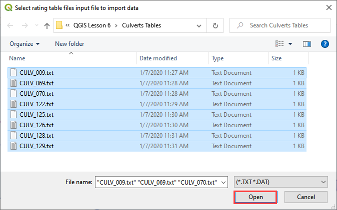
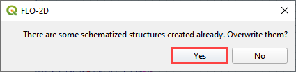
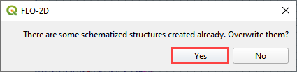
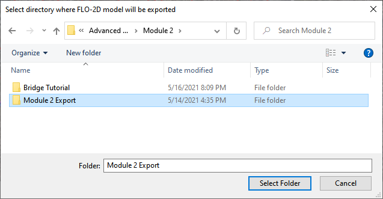
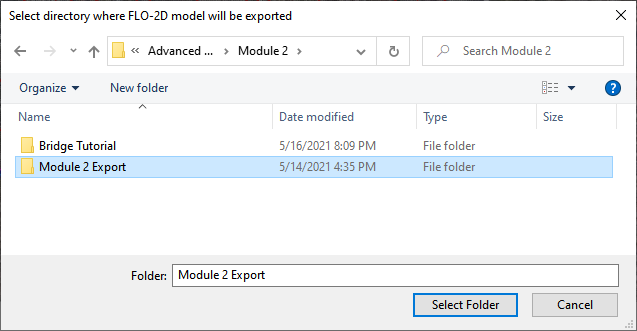

Lesson 6 – Hydraulic Structures
Part 1 - Culverts with Rating Tables
Overview
Lesson 6 Part 1 outlines the process of creating hydraulic structures with rating tables and generalized culvert equations. This lesson needs a channel so please use the data from QGIS Lesson 2, 3, or 4 to run through this tutorial.
This video shows the full process of this tutorial.
Required Data
The lesson can start from QGIS Lesson 2, 3, or 4 and hydraulic structure shapefile and structure data files in QGIS Lesson 6.
File |
Content |
Location |
*.shp |
Hydraulic Structures |
QGIS Lesson 6 |
*.txt |
Culvert Tables |
QGIS Lesson 6\Culvert Tables |
Project Location C:\Users\Public\Documents\FLO-2D Pro Documentation\Example Projects\QGIS Tutorials
Check these folders to ensure the data is available before starting the lesson.
Step-by-Step Procedure
To build HYSTRUC.DAT following these steps.
Open Lesson 2, 3, or 4 qgz file;
Import the Hydraulic Structures shapefile;
Build the structures into the User Layers;
Assign the structure attributes;
Assign the rating tables;
Schematize the data;
Export and project;
Run the simulation.
Step 1: Open QGIS and Load the Project
Search the start menu and run the “QGIS Desktop” program.
Load QGIS Lesson 1
C:\Users\Public\Documents\FLO-2D PRO Documentation\Example Projects\QGIS Tutorials\QGIS Lesson 1\Lesson 1.qgz

Important
This lesson can be started after Lesson 2 is complete.
Step 2: Import data
Start by cleaning up the map space so the next layer will be easy to see.
Uncheck the User Left Bank Lines, Right Bank Lines, and Cross Sections layers;
Uncheck the Blocked Areas;
Uncheck the Storm Drain User Layers;
Click the User Boundary Conditions Layer to activate this layer;
Drag the Hydraulic Structures onto the map space.
Note
If the image is blurry, use Firefox or open the image in a new tab.
Step 3: Format the data layers
Open the Attributes Table on the Hydraulic Structures Layer.

Select structure 130, and 131 and click Zoom map to selected rows button. This will zoom the map to these two structures.

Label the Hydraulic Structures layer.
Double click the Hydraulic Structures layer
Set the Labels like the following image.
This shows which culvert is being reviewed.
Change the layer Symbology
Change the tab to Symbology
Set the Symbol Layer Type to Arrow
Uncheck Curved Arrows
This shows the flow direction of each structure.
Step 4: Build the culverts into the User Layers Structure Lines
Use the Structure Editor to add all of the new structures.
Digitize all of the structures.
Click the Save icon to confirm that close the digitizing tool and load the data.

Digitizing process:
Left click the inlet node (upstream node)
Left click the outlet node (downstream node)
Right Click to finish the polyine.
Click OK to finish the feature.

Click Save in the Structures Widget to load the data into the dialog box.

Step 5: Assign the structure attributes
Complete the Structure Fields
Load the Hydraulic Structures Attribute table. The attributes will help fill out each structure table.
Check the center button.
Select the first structure.
Rename the Structure with the “A” button.
Fill the Type and Rating fields
Move to the next structure and repeat the process.
Schematize the structure data.
Step 6: Assign the rating tables
Click the Import Rating Tables button
Select the rating tables from the project folder.
Click open.
C:\Users\Public\Documents\FLO-2D PRO Documentation\Example Projects\QGIS Tutorials\QGIS Lesson 6\Culverts Tables
The data has been imported. Switch to another structure in the list if the table and plot does not update.

Step 7: Schematize the data
Schematize the structure data and click Yes to replace the data.
 

Part 2 – Culverts with Culvert Equations
This tutorial will illustrate how to use QGIS table editor and the FLO-2D plugin to manage and edit culvert data.
Note
The accompanying YouTube video shows several more advanced ideas for modeling culverts. The tutorial focus is on the generalized culvert equation.
Advanced channel culvert modeling
Simple storm drain
When to use tailwater switches.
How to use the head reference elevation.
Step 1: Setup the project
Get the data: https://flo-2d.sharefile.com/d-s05913b9b6c0149c1a93cec4fe52d7bb5
Download and extract the data from the link above.
Step 2: Review culvert 009
Zoom to the northeast basin as shown by the yellow box.
Find the culvert.
Turn on the Elevation layer and set the elevation style to hillshade. If the elevation layer is missing, load it from lesson 1.
Notice the blue polygon. It covers the centroid of the grid. The gif shows how to build one. This polygon is used identify the grid that needs an elevation correction. It can be more than one but in this case 1 is sufficient.

The elevation correction will be applied in a later step. Step 2.4 sets shows how to set up the correction.
Click the measure tool and measure the length of the culvert.
Review the culvert geometry.
Circular pipe culvert
48” diameter
3 barrels
Square headwall
Step 3: Complete the structure data
Select CULV_009 in the structure editor.
Rating = Culvert equation
Length = 252ft
Diameter = 4ft

TYPEC = 2 circular pipe.

TYPEEN = 1 square edge with headwall.
CULVERTN = 0.018
KE = 0.50
source: Hydraulic Design of Highway Culverts - HDS-5-Third Edition
CUBASE = 0ft
MULTBARRELS = 3

Step 4: Review culvert 122
Check the Center box and change the structure to CULV_122.

The map is centered on the CULV_122.
In this culvert, the elevation polygon was applied to the whole basin.
Note how the blue polygon covers the centroid of the cells that will be modified. This correction is applied to the attenuation basin and the stilling basin.

The culvert has a stilling basin just upstream with a levee applied to control the water surface. The grid element elevation is set to min by the blue polygon and the levee elevation is set to the crest of the weir. The water will flow over the levee and fill the stilling basin before it flows through the culvert.
The levee elevation is 1396.48ft.
The culvert length 100ft.

The entrance type is box culvert with wingwalls 30 to 70 degrees.
Step 5: Complete the structure data
Select CULV_122.
Rating = Culvert equation
Length = 100ft
Diameter = 5ft

The culvert dimensions
TYPEC = 1 Box culvert
TYPEEN = 1 Wingwall 30 to 70 Square Head at Crown
CULVERTN = 0.018
KE = 0.4
CUBASE = 8ft
MULTBARRELS = 1

Step 6: Save, export, and run
Note
The accompanying YouTube video shows several more advanced ideas for modeling culverts.
Advanced channel culvert modeling
Simple storm drain
When to use tailwater switches.
How to use the head reference elevation.
Save the project.

Export the data files to the Advanced Class Folder Module 2 Export.

 


Click the Run FLO-2D Icon.

Click OK to start the simulation.
Note
The end of the YouTube video will cover hydraulic structure review.